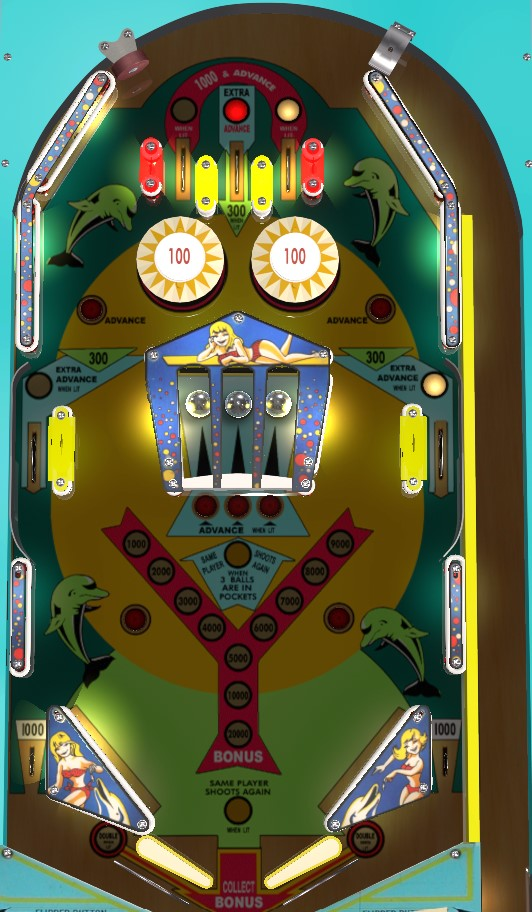

Showtime is the 4-player version. Dolphin is the 2-player version. Rules and scoring are identical between the two.
10-point switches alternate whether rollover lanes around the playfield are lit or not. Left and right top lanes score 100 points, or 1,000 and a bonus advance when lit. The center top lane and upper side lanes score 100 points, or 300 plus 3 bonus advances when lit. Bonus is also advanced by upper rollover buttons or lit center rollover buttons. Bonus is doubled on the last ball of the game and cannot be doubled any other way. There is no mid-ball bonus collect. Max base bonus is 20,000 points. The bonus will award significantly more points than what the playfield will give you.
Hitting a captive ball back into its hole lights the rollover button in front of that ball for 100 points and a bonus advance (they score 10 points otherwise). Putting all 3 captive balls in their holes awards an instant extra ball. Expectedly, shots to the captive balls- especially the center one- are very dangerous. Avoid the captive balls entirely if extra balls are off. If extra balls are on, consider how difficult it is to earn one; if you can get the extra ball relatively safely, try to earn it first, but if it's more dangerous, get some bonus advances before trying for the extra ball so that you still take something with you if you drain before getting the extra ball. High scores on Showtime/Dolphin require getting as many extra balls and big bonus collects as possible.
Max one extra ball per ball in play. Tilt ends the ball in play only.
